Implementing diffusion
GAMA provides you the possibility to represent and simulate the diffusion of a variable through a grid topology.
Index
- Diffuse statement
- Diffusion with matrix
- Diffusion with parameters
- Computation methods
- Use mask
- Pseudo code
Diffuse statement
The statement to use for the diffusion is diffuse. It has to be used in a grid species. The diffuse uses the following facets:
var(an identifier), (omissible) : the variable to be diffusedon(any type in [container, species]): the list of agents (in general cells of a grid), on which the diffusion will occuravoid_mask(boolean): if true, the value will not be diffused in the masked cells, but will be restitute to the neighboring cells, multiplied by the variation value (no signal lost). If false, the value will be diffused in the masked cells, but masked cells won't diffuse the value afterward (lost of signal). (default value : false)cycle_length(int): the number of diffusion operation applied in one simulation stepmask(matrix): a matrix masking the diffusion (matrix created from a image for example). The cells corresponding to the values smaller than "-1" in the mask matrix will not diffuse, and the other will diffuse.matrix(matrix): the diffusion matrix ("kernel" or "filter" in image processing). Can have any size, as long as dimensions are odd values.method(an identifier), takes values in: {convolution, dot_product}: the diffusion methodmin_value(float): if a value is smaller than this value, it will not be diffused. By default, this value is equal to 0.0. This value cannot be smaller than 0.propagation(a label), takes values in: {diffusion, gradient}: represents both the way the signal is propagated and the way to treat multiple propagation of the same signal occurring at once from different places. If propagation equals 'diffusion', the intensity of a signal is shared between its neighbors with respect to 'proportion', 'variation' and the number of neighbors of the environment places (4, 6 or 8). I.e., for a given signal S propagated from place P, the value transmitted to its N neighbors is : S' = (S / N / proportion) - variation. The intensity of S is then diminished by S*proportion on P. In a diffusion, the different signals of the same name see their intensities added to each other on each place. If propagation equals 'gradient', the original intensity is not modified, and each neighbors receives the intensity : S / proportion - variation. If multiple propagation occur at once, only the maximum intensity is kept on each place. If 'propagation' is not defined, it is assumed that it is equal to 'diffusion'.proportion(float): a diffusion rateradius(int): a diffusion radius (in number of cells from the center)variation(float): an absolute value to decrease at each neighbors
To write a diffusion, you first have to declare a grid, and declare a special attribute for the diffusion. You will then have to write the diffuse statement in an other scope (such as the global scope for instance), which will permit the values to be diffused at each step. There, you will specify which variable you want to diffuse (through the var facet), on which species or list of agents you want the diffusion (through the on facet), and how you want this value to be diffused (through all the other facets, we will see how it works with matrix and with special parameters just after).
Here is the template of code we will use for the next following part of this page:
global {
int size <- 64; // the size has to be a power of 2.
cells selected_cells;
// Initialize the emiter cell as the cell at the center of the word
init {
selected_cells <- location as cells;
}
// Affecting "1" to each step
reflex new_Value {
ask(selected_cells){
phero <- 1.0;
}
}
reflex diff {
// Declare a diffusion on the grid "cells" and on "quick_cells". The diffusion declared on "quick_cells" will make 10 computations at each step to accelerate the process.
// The value of the diffusion will be store in the new variable "phero" of the cell.
diffuse var: phero on: cells /*HERE WRITE DOWN THE DIFFUSION PROPERTIES*/;
}
}
grid cells height: size width: size {
// "phero" is the variable storing the value of the diffusion
float phero <- 0.0;
// The color of the cell is linked to the value of "phero".
rgb color <- hsb(phero,1.0,1.0) update: hsb(phero,1.0,1.0);
}
experiment diffusion type: gui {
output {
display a type: opengl {
// Display the grid with elevation
grid cells elevation: phero * 10 triangulation: true;
}
}
}
This model will simulate a diffusion through a grid at each step, affecting 1 to the center cell diffusing variable value. The diffusion will be seen during the simulation through a color code, and through the elevation of the cell.
Diffusion with matrix
A first way of specifying the behavior of your diffusion is using diffusion matrix. A diffusion matrix is a 2 dimension matrix [n][m] with float values, where both n and m have to be pair values. The most often, diffusion matrix are square matrix, but you can also declare rectangular matrix.
Example of matrix:
matrix<float> mat_diff <- matrix([
[1/9,1/9,1/9],
[1/9,1/9,1/9],
[1/9,1/9,1/9]]);
In the diffuse statement, you than have to specify the matrix of diffusion you want in the facet matrix.
diffuse var: phero on: cells matrix:mat_diff;
Using the facet propagation, you can specify if you want the value to be propagated as a diffusion or as a gratient.
Diffusion matrix
A diffusion (the default value of the facet propagation) will spread the values to the neighbors cells according to the diffusion matrix, and all those values will be added together, as it is the case in the following example :
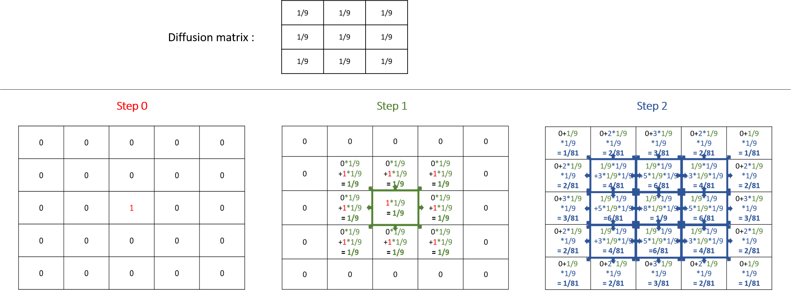
Note that the sum of all the values diffused at the next step is equal to the sum of the values that will be diffused multiply by the sum of the values of the diffusion matrix. That means that if the sum of the values of your diffusion matrix is larger than 1, the values will increase exponentially at each step. The sum of the value of a diffusion matrix is usually equal to 1.
Here are some example of matrix you can use, played with the template model:
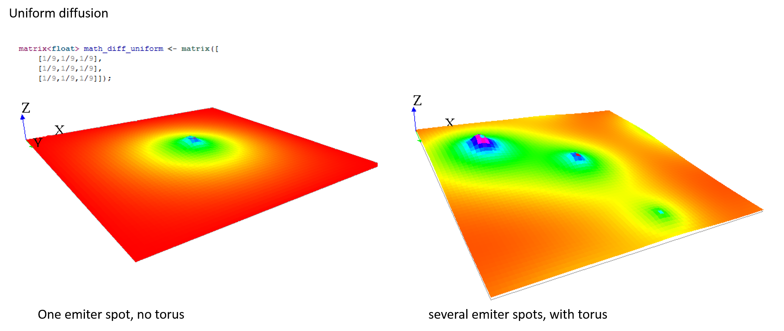
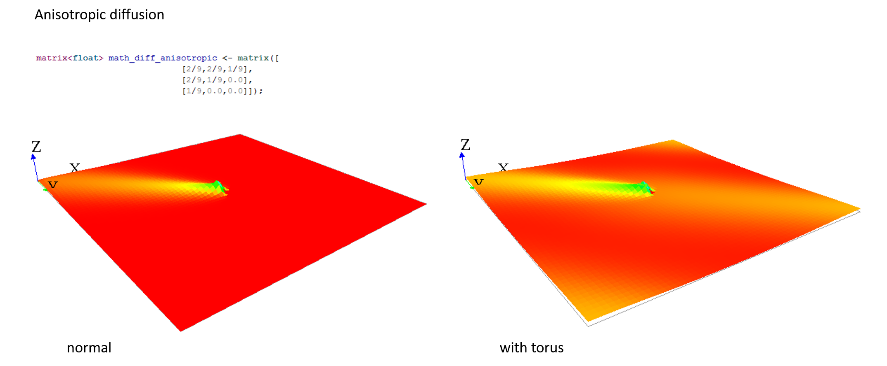
Gradient matrix
A gradient (use facet : propagation:gradient) is an other type of propagation. This time, only the larger value diffused will be chosen as the new one.
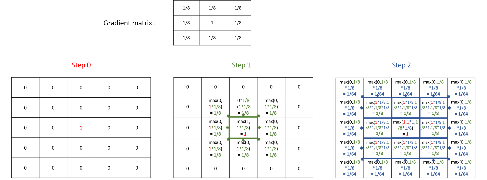
Note that unlike the diffusion propagation, the sum of your matrix can be greater than 1 (and it is the case, most often !).
Here are some example of matrix with gradient propagation:
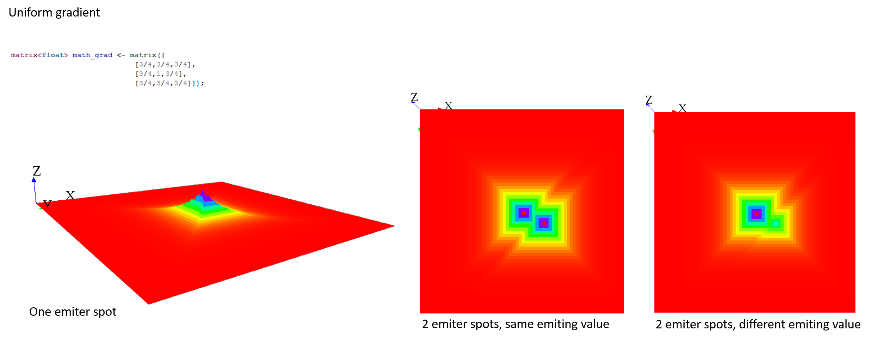
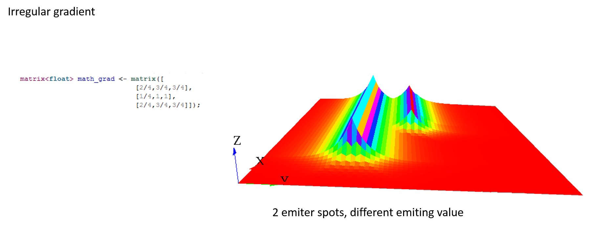
Compute multiple propagations at the same step
You can compute several times the propagation you want by using the facet cycle_length. GAMA will compute for you the corresponding new matrix, and will apply it.
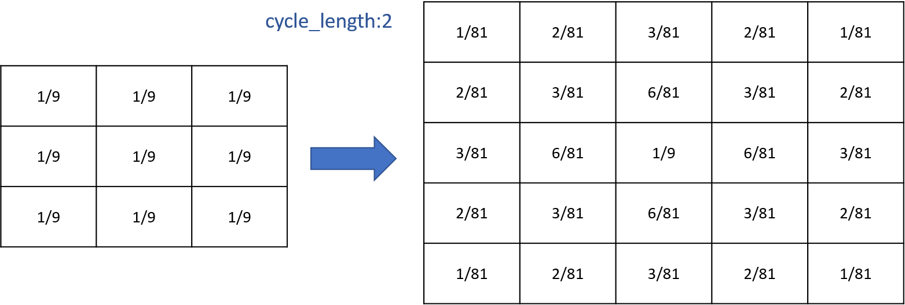
Writing those two thinks are exactly equivalent (for diffusion):
matrix<float> mat_diff <- matrix([
[1/81,2/81,3/81,2/81,1/81],
[2/81,4/81,6/81,4/81,2/81],
[3/81,6/81,1/9,6/81,3/81],
[2/81,4/81,6/81,4/81,2/81],
[1/81,2/81,3/81,2/81,1/81]]);
reflex diff {
diffuse var: phero on: cells matrix:mat_diff;
matrix<float> mat_diff <- matrix([
[1/9,1/9,1/9],
[1/9,1/9,1/9],
[1/9,1/9,1/9]]);
reflex diff {
diffuse var: phero on: cells matrix:mat_diff cycle_length:2;
Executing several diffusion matrix
If you execute several times the statement diffuse with different matrix on the same variable, their values will be added (and centered if their dimension is not equal).
Thus, the following 3 matrix will be combined to create one unique matrix:
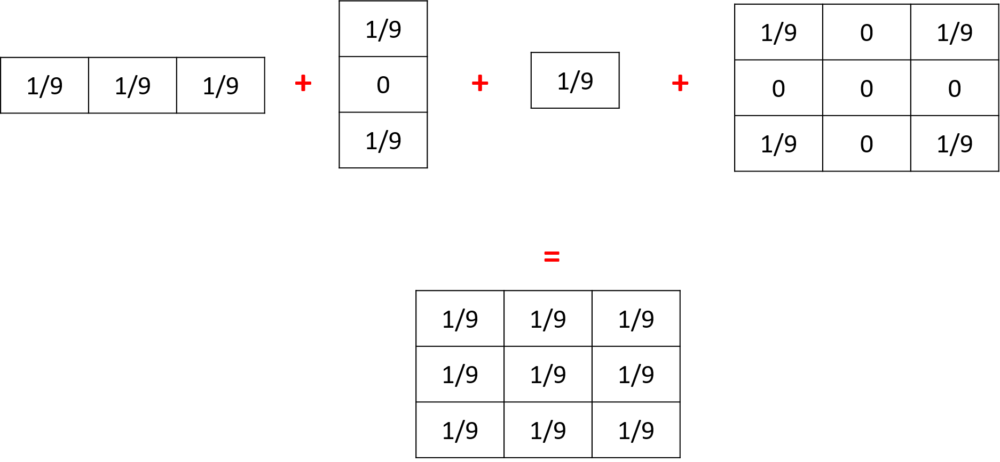
Diffusion with parameters
Sometimes writing diffusion matrix is not exactly what you want, and you may prefer to just give some parameters to compute the correct diffusion matrix. You can use the following facets in order to do that : propagation, variation and radius.
Depending on which propagation you choose, and how many neighbors your grid have, the propagation matrix will be compute differently. The propagation matrix will have the size : range*2+1.
Let's note P for the propagation value, V for the variation, R for the range and N for the number of neighbors.
- With diffusion propagation
For diffusion propagation, we compute following the following steps:
(1) We determine the "minimale" matrix according to N (if N = 8, the matrix will be [[P/9,P/9,P/9][P/9,1/9,P/9][P/9,P/9,P/9]]. if N = 4, the matrix will be [[0,P/5,0][P/5,1/5,P/5][0,P/5,0]]).
(2) If R != 1, we propagate the matrix R times to obtain a [2*R+1][2*R+1] matrix (same computation as for cycle_length).
(3) If V != 0, we substract each value by V*DistanceFromCenter (DistanceFromCenter depends on N).
Ex with the default values (P=1, R=1, V=0, N=8):
- With gradient propagation
The value of each cell will be equal to P/POW(N,DistanceFromCenter)-DistanceFromCenterV*. (DistanceFromCenter depends on N).
Ex with R=2, other parameters default values (R=2, P=1, V=0, N=8):
Note that if you declared a diffusion matrix, you cannot use those 3 facets (it will raise a warning). Note also that if you use parameters, you will only have uniform matrix.
Computation methods
You can compute the output matrix using two computation methods by using the facet method : the dot product and the convolution. Note that the result of those two methods is exactly the same (except if you use the avoid_mask facet, the results can be slightly differents between the two computations).
Convolution
convolution is the default computation method for the diffusion. For every output cells, we will multiply the input values and the flipped kernel together, as shown in the following image :
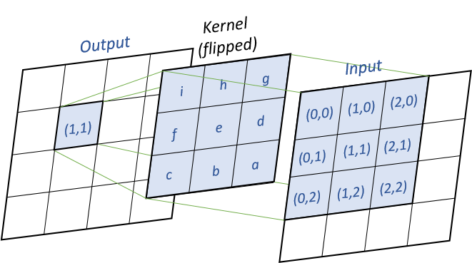
Pseudo-code (k the kernel, x the input matrix, y the output matrix) :
for (i = 0 ; i < y.nbRows ; i++)
for (j = 0 ; j < y.nbCols ; j++)
for (m = 0 ; m < k.nbRows ; m++)
for (n = 0 ; n < k.nbCols ; n++)
y[i,j] += k[k.nbRows - m - 1, k.nbCols - n - 1]
* x[i - k.nbRows/2 + m, j - k.nbCols/2 + n]
Dot Product
dot_product method will compute the matrix using a simple dot product between the matrix. For every input cells, we multiply the cell by the kernel matrix, as shown in the following image :
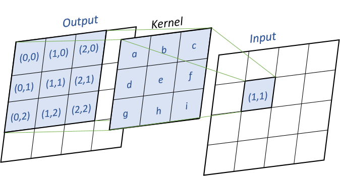
Pseudo-code (k the kernel, x the input matrix, y the output matrix) :
for (i = 0 ; i < y.nbRows ; i++)
for (j = 0 ; j < y.nbCols ; j++)
for (m = 0 ; m < k.nbRows ; m++)
for (n = 0 ; n < k.nbCols ; n++)
y[i - k.nbRows/2 + m, j - k.nbCols/2 + n] += k[m, n] * x[i, j]
Using mask
Generalities
If you want to propagate some values in an heterogeneous grid, you can use some mask to forbid some cells to propagate their values.
You can pass a matrix to the facet mask. All the values smaller than -1 will not propagate, and all the values greater or equal to -1 will propagate.
A simple way to use mask is by loading an image :
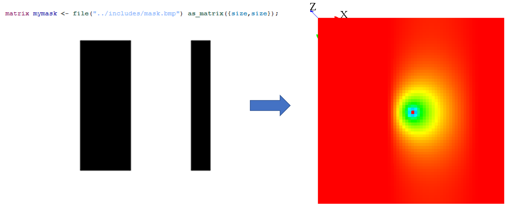
Note that when you use the on facet for the diffuse statement, you can choose only some cells, and not every cells. In fact, when you restrain the values to be diffuse, it is exactly the same process as if you were defining a mask.
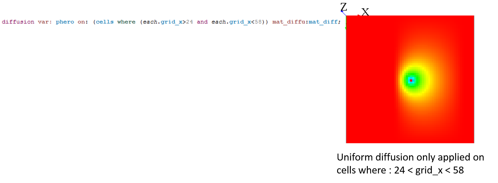
When your diffusion is combined with a mask, the default behavior is that the non-masked cells will diffuse their values in all existing cells (that means, even the masked cells !). To change this behavior, you can use the facet avoid_mask. In that case, the value which was supposed to be affected to the masked cell will be redistributed to the neighboring non-masked cells.
Tips
Masks can be used to simulate a lot of environments. Here are some ideas for your models:
Wall blocking the diffusion
If you want to simulate a wall blocking a uniform diffusion, you can declare a second diffusion matrix that will be applied only on the cells where your wall will be. This diffusion matrix will "push" the values outside from himself, but conserving the values (the sum of the values of the diffusion still have to be equal to 1) :
matrix<float> mat_diff <- matrix([
[1/9,1/9,1/9],
[1/9,1/9,1/9],
[1/9,1/9,1/9]]);
matrix<float> mat_diff_left_wall <- matrix([
[0.0,0.0,2/9],
[0.0,0.0,4/9],
[0.0,0.0,2/9]]);
reflex diff {
diffuse var: phero on: (cells where(each.grid_x>30)) matrix:mat_diff;
diffuse var: phero on: (cells where(each.grid_x=30)) matrix:mat_diff_left_wall;
}
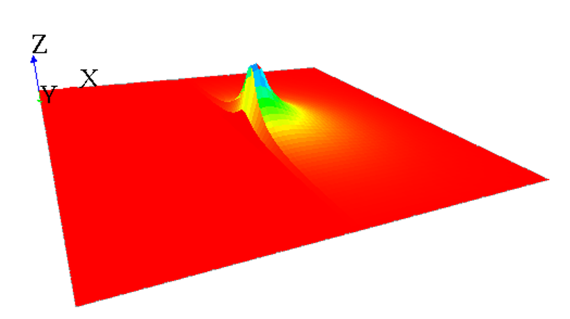
Note that almost the same result can be obtained by using the facet avoid_mask : the value of all masked cells will remain at 0, and the value which was supposed to be affected to the masked cell will be distributed to the neighboring cells. Notice that the results can be slightly different if you are using the convolution or the dot_product method : the algorithm of redistribution of the value to the neighboring cells is a bit different. We advise you to use the dot_product with the avoid_mask facet, the results are more accurates.
Wind pushing the diffusion
Let's simulate a uniform diffusion that is pushed by a wind from "north" everywhere in the grid. A wind from "west" as blowing at the top side of the grid. We will here have to build 2 matrix : one for the uniform diffusion, one for the "north" wind and one for the "west" wind. The sum of the values for the 2 matrix meant to simulate the wind will be equal to 0 (as it will be add to the diffusion matrix).
matrix<float> mat_diff <- matrix([
[1/9,1/9,1/9],
[1/9,1/9,1/9],
[1/9,1/9,1/9]]);
matrix<float> mat_wind_from_west <- matrix([
[-1/9,0.0,1/9],
[-1/9,0.0,1/9],
[-1/9,0.0,1/9]]);
matrix<float> mat_wind_from_north <- matrix([
[-1/9,-1/9,-1/9],
[0.0,0.0,0.0],
[1/9,1/9,1/9]]);
reflex diff {
diffuse var: phero on: cells matrix:mat_diff;
diffuse var: phero on: cells matrix:mat_wind_from_north;
diffuse var: phero on: (cells where (each.grid_y>=32)) matrix:mat_wind_from_west;
}
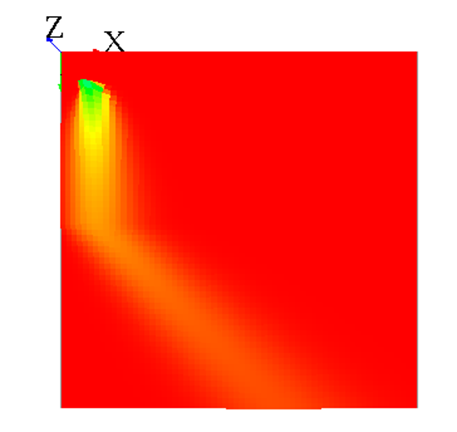
Endless world
Note that when your world is not a torus, it has the same effect as a mask, since all the values outside from the world cannot diffuse some values back :
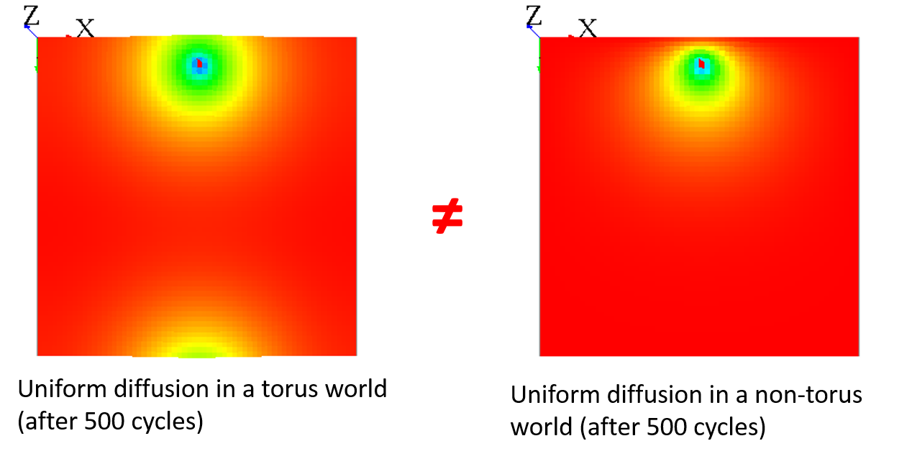
You can "fake" the fact that your world is endless by adding a different diffusion for the cells with grid_x=0 to have almost the same result :
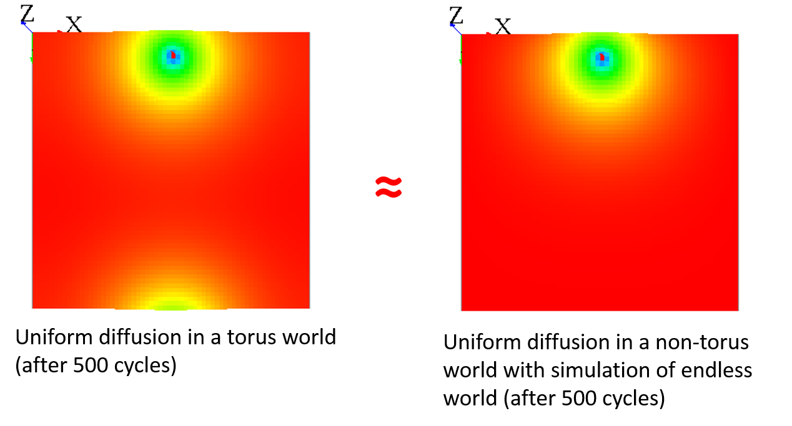
matrix<float> mat_diff <- matrix([
[1/9,1/9,1/9],
[1/9,1/9,1/9],
[1/9,1/9,1/9]]);
matrix<float> mat_diff_upper_edge <- matrix([
[0.0,0.0,0.0],
[1/9+7/81,2/9+1/81,1/9+7/81],
[1/9,1/9,1/9]]);
reflex diff {
diffuse var: phero on: (cells where(each.grid_y>0)) matrix:mat_diff;
diffuse var: phero on: (cells where(each.grid_y=0)) matrix:mat_diff_upper_edge;
}
Pseudo code
This section is more for a better understanding of the source code.
Here is the pseudo code for the computation of diffusion :
- : Execute the statement
diffuse, store the diffusions in a map (from class DiffusionStatement to class GridDiffuser) :
- Get all the facet values
- Compute the "real" mask, from the facet "mask:" and the facet "on:".
- If no value for "mask:" and "on:" all the grid, the mask is equal to null.
- Compute the matrix of diffusion
- If no value for "matrix:", compute with "nb_neighbors", "is_gradient", "proportion", "propagation", "variation", "range".
- Then, compute the matrix of diffusion with "cycle_length".
- Store the diffusion properties in a map
- Map : ["method_diffu", "is_gradient", "matrix", "mask", "min_value"] is value, ["var_diffu", "grid_name"] is key.
- If the key exists in the map, try to "mix" the diffusions
- If "method_diffu", "mask" and "is_gradient" equal for the 2 diffusions, mix the diffusion matrix.
- : At the end of the step, execute the diffusions (class GridDiffuser) :
- For each key of the map,
- Load the couple "var_diffu" / "grid_name"
- Build the "output" and "input" array with the dimension of the grid.
- Initialize the "output" array with -Double.MAX_VALUE.
- For each value of the map for that key,
- Load all the properties : "method_diffu", "is_gradient", "matrix", "mask", "min_value"
- Compute :
- If the cell is not masked, if the value of input is > min_value, diffuse to the neighbors.
- If the value of the cell is equal to -Double.MAX_VALUE, remplace it by input[idx] * matDiffu[i][j].
- Else, do the computation (gradient or diffusion).
- Finish the diffusion :
- If output[idx] > -Double.MAX_VALUE, write the new value in the cell.